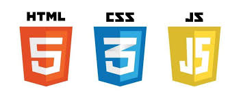

Estruturando Páginas Web HTML
HTML é uma linguagem de marcação usada para definir a estrutura de páginas web.

1. Conceitos Básicos
- HTML usa elementos (tags) para estruturar conteúdo
- Tags possuem abertura e fechamento
- Atributos adicionam informações extras as tags
- Arquivos HTML são arquivos de texto do tipo .html
2. Estrutura de uma Página
- !DOCTYPE html: define o tipo do documento
- html: raiz da página
- head: metadados
- body: conteúdo visível
3. Principais Elementos
Texto
- Títulos: h1 até h6
- Parágrafos: p
- Negrito e itálico: b, i, strong, em
Listas
- Ordenadas: ol
- Não ordenadas: ul
- Itens: li
Links
Usados com a tag a, podendo ser externos, internos ou relativos.
Imagens
- Tag: img
- Atributos: src (caminho) e alt (descrição)
Tabelas
- table, tr, td, th
- Organizam dados em linhas e colunas
Formulários
- form, input, textarea, select
- Permitem envio de dados ao servidor
5. Conclusão
HTML define a estrutura das páginas web e é a base do desenvolvimento frontend.